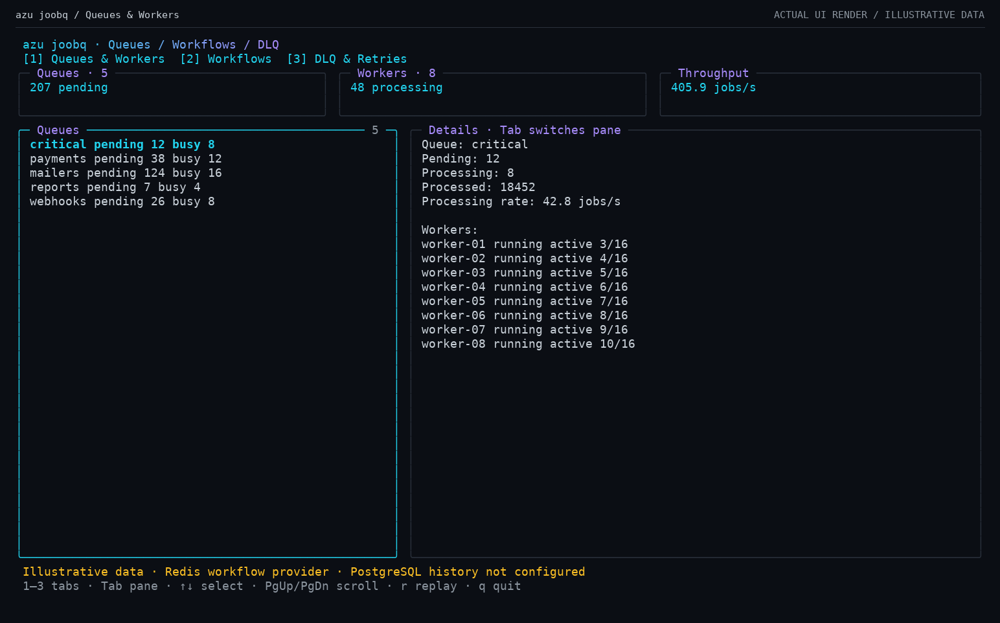
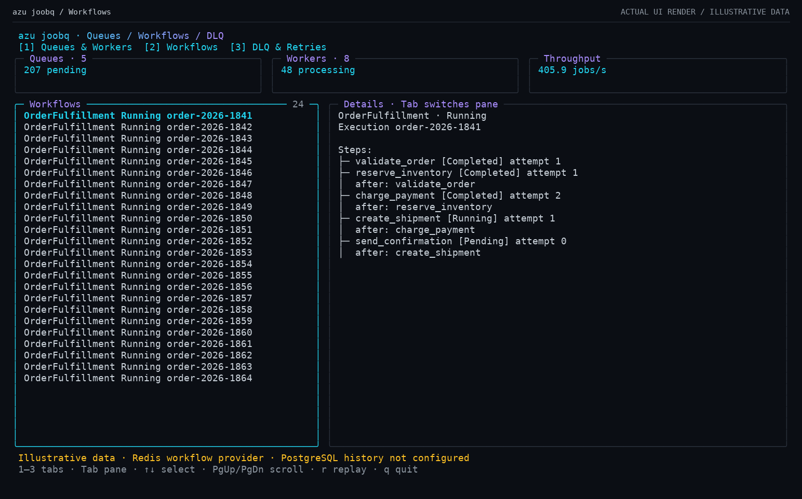
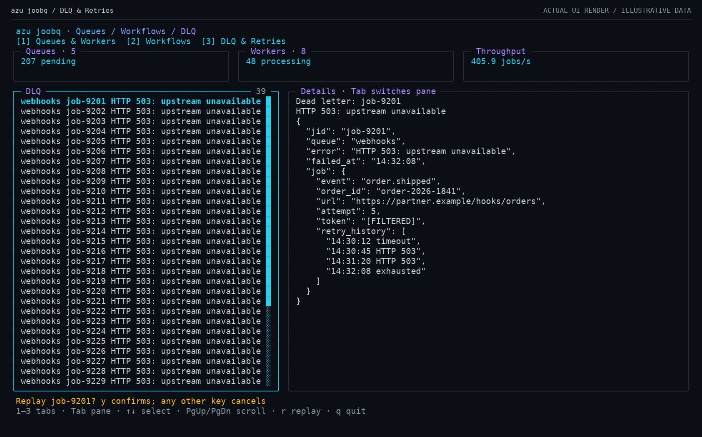
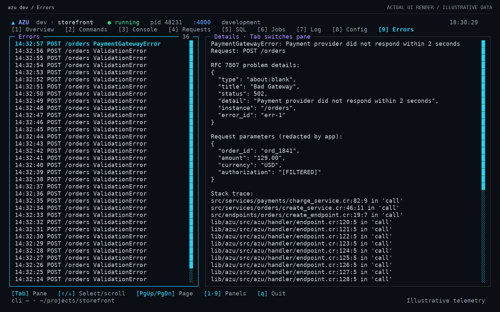
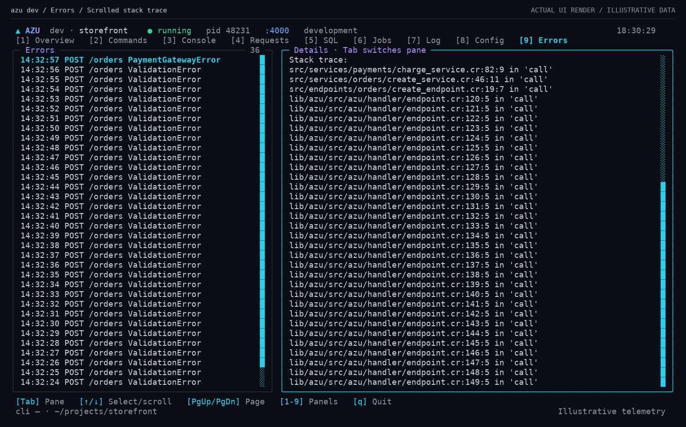
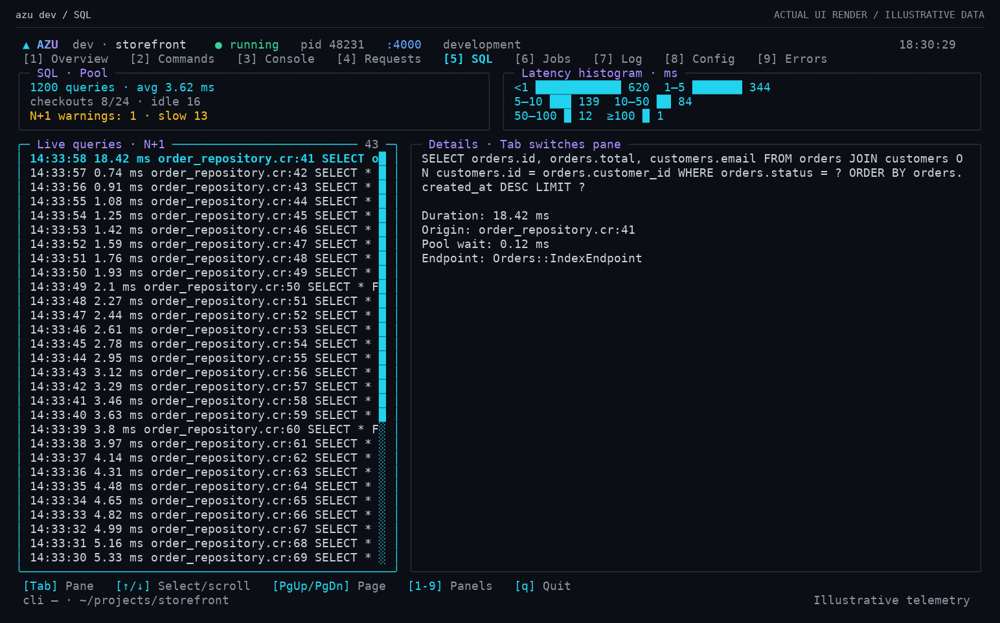
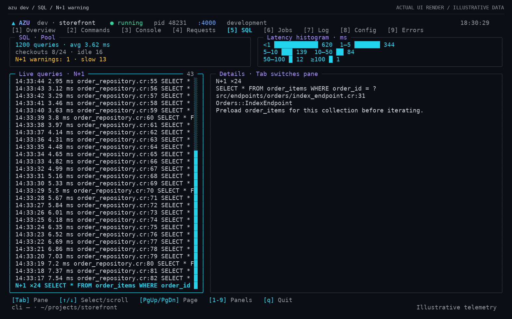

Azu terminal screens
Actual Crystal UI components rendered at 136 × 40 cells with illustrative fixtures. No live application data or stores were accessed.
azu joobq / Queues & Workers
azu joobq / Workflows
azu joobq / DLQ & Retries
azu dev / Errors
azu dev / Errors / Scrolled stack trace
azu dev / SQL
azu dev / SQL / N+1 warning
Download all PNGs